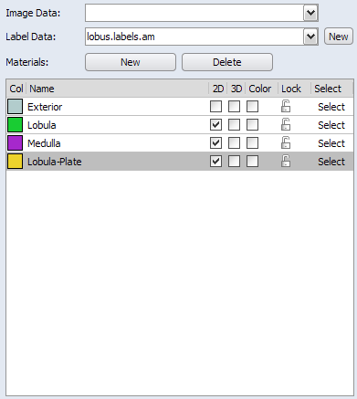

To select a material in the material list, click on the
material name with the left mouse button. The selected
material will be highlighted in dark blue.

Figure 3:
The material list.
Press the New button to add a new material to the list (note that not more than 256 materials
are accepted). To delete a material, select a material, then press the
Delete button.
Click on the color square to the left of the material
name to bring up a color dialog to edit the color.
If the color checkbox is enabled on right of the material name,
the voxels are rendered with the selected color.
Check the 2D and 3D checkboxes to the right of the material name to switch
the material visible or invisible in the MPR and in the 3D viewer.
The rendering windows and colormap can be set in the Zoom and Data
Window and in the Display and Data Masking areas.
Click on the lock icon to lock or unlock the material.
If a material is locked, no voxels can be subtracted from this region,
neither explicitly, nor implicitly by adding them to another material.
The lock icon indicates the current state (locked, unlocked).
Press the select button to select all pixels of
the corresponding material.
The current material is the material which is assigned to
selected voxels if the "+" button is pressed. This
material is displayed with a gray highlight. In the material
list the current material can be selected by clicking on the
material name with the left mouse button.
A special behavior is
obtained if one of the Shift, Control, or Alt keys on the
keyboard is held down while selecting the material:
- If Shift is held down, all voxels which are already assigned
to the selected material are added to the current selection (either in
the current slice or in the whole volume, depending if
All slices is selected or not).
- If Control is held down, all voxels assigned to the selected
material will be deselected (either in the current slice or in the
whole volume, depending if All slices is selected or not).
- Holding down the Alt key does the same as Shift except
that the selection is cleared before new voxels are selected.
Additional options of the material list can be accessed via a popup menu,
which shows up when the right mouse button is pressed on a particular
material entry. The following menu entries are provided:
- Draw Style: A submenu offers different styles how pixels
belonging to a particular material are rendered in the image viewer.
The possible appearances are:
- Invisible: The material is not visible. You can also control
the visibility by clicking on the material's eye icon of the material list.
- Contour: The segments are enclosed by lines.
- Hatched: The segments are enclosed by lines and shown hatched.
- Dotted: The segments are enclosed by lines and filled with dots.
- Light Dots: The segments are enclosed by lines and filled with less dots.
- Preferences: Opens the Segmentation Editor Preferences.
- New Material: By selecting this option from the popup menu a
new entry is added to the material list with a randomly chosen color
and a default name, e.g., "NewMaterial". These properties can be changed
as described above. You can also create a new material by pressing the
New button above the material list.
- Rename Material: With this option you can change the name of a material.
A text cursor appears and lets you edit the name as easily as any other
text field. If the new name is equal to the name of an existing
material you are asked if these two materials should be merged. It
is not possible to have to different materials with the same name.
- Delete Material: If you choose Delete, the material you have
clicked on will be deleted. Voxels belonging to that material will be
assigned to the first material in the list (typically the background).
You can also delete a selected material by pressing the Delete button above
the material list.
- Edit Color: This command brings up a color dialog
in which you
can easily change the color of this material. You can also access the
color editor by clicking on the material's color square in the material
list.
- Locate: This command sets all viewers to the slice with the
largest region of this material. This is especially useful to navigate
in large data sets with many materials.
- Lock/Unlock Material: You can lock a material with this option.
A lock icon to the right of the material indicates its current state
(locked/unlocked).
If a material is locked, no voxels can be subtracted from this region,
neither explicitly, nor implicitly by adding them to another material.
You can also lock/unlock the material by clicking on the material's
lock icon in the material list.
- Lock All: This locks all materials.